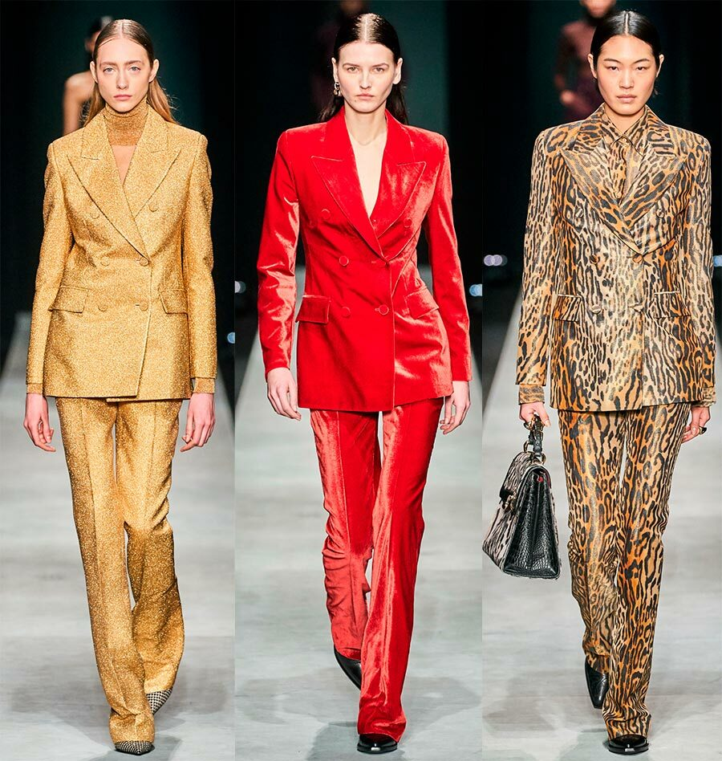

Made on

Tilda
|  |
Fashion trends 2022-2023. Basic minimum
What is the basic minimum? This is the part of your wardrobe that you should not spare money for, because the basic things will serve you for more than one season, and even a year. The base should be of the highest quality, so we recommend buying basic things from trusted manufacturers.tendentsii mody 7
The database should include elements with which you can easily make up a lot of kits, and thanks to which you can use fashion trends and trends for yourself in an interesting way.
The basic wardrobe is:
Basic tops, white, grey, black, beige colored t-shirts, white, black shirt boxy
knit sweaters loose cut in the basic shades, Longsleeves, jackets different colors
straight-leg jeans, mom jeans in fashionable colors
the actual pants for your figure cut in beige, black, grey, brown shades, for example, with a high rise, straight cut
knitted dress/dress underwear style MIDI and MIDI skirt in solid colors of fabrics depending on the season
available in cut jackets in several versions, trench
suits: trouser, knitted, walking, loose-fitting in a sporty style
double-breasted coat/coat robe made of quilted fabric, wool, cashmere in basic shades
voluminous down jacket or jacket of a loose fit without fur
classic pumps in black/beige, white sneakers, rough boots, chelsea, loafers, boots with low running or small heelsThe basic wardrobe is: